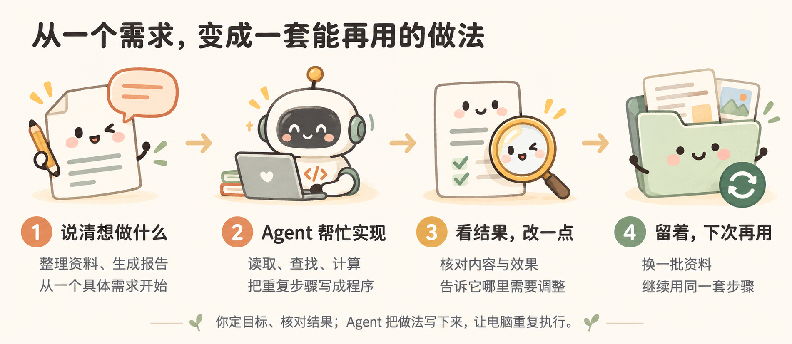
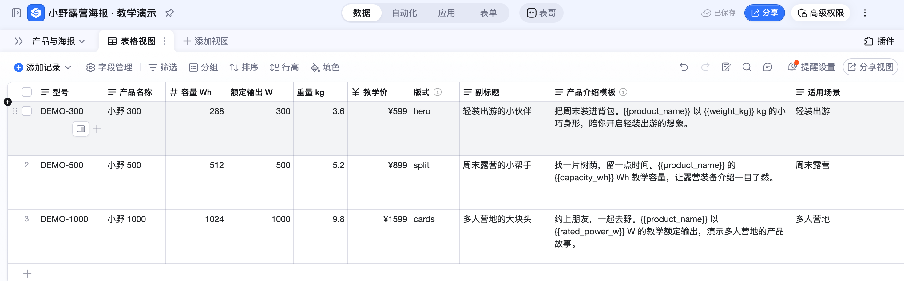
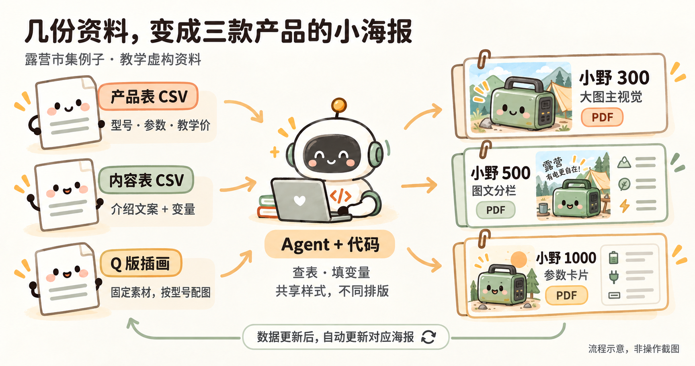

【产品运营部】AI 使用知识分享
从一只会骑车的鹈鹕，到一个能帮你赶上交稿的小工具。
一、GPT-6 Astra 到底能做到什么？
先不看参数表。我们给它出一道有点不正经的题：
生成鹈鹕骑车的 HTML
就这一句。提示词里没规定画风，没写分镜，也没告诉它鹈鹕的脚该怎么够到踏板。
把这句提示词发给 GPT-6 Astra（High），一次生成的作品如下。试着按一下暂停，看看脚和踏板；再调调速度，或者按一下车铃。
这是一份在浏览器里运行的 HTML：画面由代码绘制，动作由程序控制，按钮可以改变运行状态。
我们给的是一句话，拿到的是一件能打开、能操作、还能接着改的作品。 这才是今天值得往下聊的地方。
二、厉害的不只是做出一个动画
一只鸟、一辆车，各画各的并不难理解。让鸟坐对位置、脚跟着踏板走、车轮跟着转，还能一起暂停，就不是“把几个东西摆在一张图上”了。
你可以盯着这三个地方看：
- 脚有没有在骑？ 腿部要跟着踏板的位置变化，而不是在车旁边随便晃。
- 画面有没有配合？ 车轮转、围巾飘、背景移动，合在一起才像在海边骑行。
- 按钮是不是摆设？ 暂停和调速要真的起作用，不只是画了一个漂亮界面。
接着提一个修改：
只把围巾改成蓝色，其他画面和动作不变。
这句话看着简单，却多了一层要求：不光要会做，还要知道哪些能改、哪些要保留。 改完得重新打开看看，不能只听它说“已经完成”。
所以，GPT-6 Astra 的专长怎么理解？
按当前 Codex 的模型定位，Astra 适合复杂、高要求的任务，侧重推理与较难的编程。放到实际使用里，就是可以让它处理那些“要求好几条，还得一起成立”的工作：读懂已有资料，理清相互关系，写出实现，再根据运行结果继续修正。
鹈鹕给了我们一个直观入口：从一句不完整的想法，补出画面、代码和交互。工作里则可能是“读对参数、保持样式、改一款不影响另外两款”。我们要观察的，不只是它写了多少代码，而是这些要求最后有没有一起做到。
这里展示的是具体作品，不是“模型永远不会出错”的证明。模型定位的来源说明、实现细节和测试方法，放在 GPT-6 Astra 引用稿。
换个模型，会骑成什么样？
这也是一句很方便拿去试的提示词。给不同模型同一句话，保存各自的第一次结果，打开看看：认得出是鹈鹕吗？车能看吗？文件能运行吗？如果做了动画，动作顺不顺？
尽量用相同工具、全新对话和相同尝试次数；追加修改时，也给同一个要求。暂停、调速和车铃不是原题要求，是这份作品里可以观察的额外设计。
目前这里没有多模型实测排名。一道题看不出所有能力，但足够让我们从“听说很厉害”，变成“我亲自试过它怎么做”。
三、放到工作里，能替我们做什么？
做出一只会骑车的鹈鹕很有意思。但对我们来说，更重要的问题是：同样的能力，能不能用来完成明天要交的工作？
周五下午，小林收到一条消息：
明天露营市集，三款产品各做一张小海报。要有介绍、参数、活动价，风格统一，但别长得一模一样。
过了一会儿，又来一条：
价格可能还要改。
小林看了一眼表格，又看了一眼时间。他需要的显然不只是一张漂亮图片——参数要对，三张要成套，临时改价还得来得及。
先看这个案例最后做出的东西：

三份 A5 单页 PDF：小野 300 用大图，小野 500 用图文分栏，小野 1000 用参数卡片。颜色、字体和组件样式共用，布局各有各的样子。
插画是生成素材，介绍、参数和价格则用 LaTeX 单独排版。这样改价格时，不需要让 AI 再画一张“数字差不多”的图。
本案例的“小野 300 / 500 / 1000”、参数、价格和插画都明确用于教学，不是真实销售资料。打开三款海报和案例素材。
交稿前，熟悉的那条消息来了
小野 500 改成 899，另外两款不动。
这次小林在本地页面把 999 改成 899，点保存，然后停手。没有再发“帮我重新生成”。
后台发现变化后，只重做了小野 500。打开新 PDF，价格已经是 899；另外两款文件保持不变。
{kind=link}
{kind=link}
{kind=link}
这比“AI 帮我做了三张海报”多了一点东西：它帮小林做出了一套以后还能继续用的办法。 下次改资料，不必重新从排版开始。
不过，保存成功和海报更新成功是两件事。案例核验了新 PDF 和另外两款文件，记录在 验收结果；不是只看页面上的数字变了就算完成。
四、不会写代码，怎么把它用起来？
别被刚才的结果吓住。小林开头并没有说：“请给我设计一个包含变量替换、组件化排版和增量构建的系统。”
他打开的只是一个空文件夹。
自己跟做时，可以用 HTML + CSS 排版，先在浏览器里看效果，再打印或保存为 PDF。上面的成品案例使用 LaTeX，练习不必安装它。
用已经安装并登录的 Codex 或 Claude Code 打开空文件夹。先把 小野 300 示例插画 保存到这个文件夹，保留文件名 xiaoye-300.png，再把下面整段发给 Agent：
{kind=link}
帮我做一张露营市集的 A5 单页产品海报。下面是完整的教学虚构资料，不是真实销售产品，不需要上网查参数。
产品名：小野 300；型号：DEMO-300。容量：288 Wh；额定输出：300 W；重量：3.6 kg；教学价：599 元。
标题：轻装出游的小伙伴。介绍：把周末装进背包。小野 300 以 3.6 kg 的小巧身形，陪你开启轻装出游的想象。
插画使用当前文件夹里的 xiaoye-300.png。请先确认能读到图片；找不到就告诉我补充，不要猜图片路径。
用 HTML 和 CSS 排版，奶油色底、森林绿点缀，产品图突出，参数和价格清楚。文字和数字单独排版，方便以后修改；页脚注明“教学虚构资料”。
把文件保存在当前文件夹，在浏览器里打开给我看。支持 A5 单页打印或保存为 PDF，检查文字、图片没有截断。先做这一张，不要上传钉钉；做好后告诉我下次打开哪个文件、在哪里改文字和价格。
先要一张，不是因为只能做一张，而是这样最容易看出自己到底想要什么。

你负责看结果，也负责说“不对”
第一张出来后，小林说：“方向对，但三张都这样排，有点像复制粘贴。”
于是接着提：
300 保留大图；500 改成图片在左、参数在右；1000 用三张参数卡片。三张只共享颜色、字体和组件样式，布局要不同，不要修改产品数据。
共享样式，不等于共享排版。 就像同一套积木，可以搭出不同的东西。共同的颜色和字体放在一处管理，每张海报决定自己的摆法。这种组织方式借鉴了 Auto-Manual，没有照搬说明书的外观。
你不用先会写布局文件，也能判断：数字有没有错？文字是不是挤了？三张像不像一个系列？
发现问题，就截下真实结果，具体地说：
小野 500 的介绍挤到价格上了。请调整间距，保留现在的左右分栏，另外两张不动。改好后再打开给我看。
这就是修改与调试的起点。本次制作也遇到过字体不可用、编译失败，修正配置后才生成成功。报错不是故事的结尾，是下一次修改的线索。
为什么后来又有了表格和变量？
因为小林不想下次换产品时，还得重新发一遍所有资料。
于是产品表放名称、参数和价格，内容表放介绍模板，用型号把两边对应起来。本地以 CSV 保存，整理后也放进了钉钉教学表：

比如介绍模板留两个空位：
{{product_name}} 的 {{capacity_wh}} Wh 教学容量
程序按型号查表，填出来就是：
小野 500 的 512 Wh 教学容量
大括号是变量标记。你可以把它理解成“这里请填表格里的值”，不是“这里请 AI 自由发挥”。

先有“下次能不能少做一遍”的需求，再遇见表格、变量和组件，不必反过来先背完一套术语。
五、从做一次，到以后都能用
能做出海报之后，小林才继续加要求。不是一次提得越多越好，而是每加一项，都能试一试到底有没有用。
第一件事：别让我每次都喊“再生成一次”
让我在本地页面改价格。保存后，工具自己发现变化，只更新受影响的海报。告诉我哪款更新成功、最近改了什么；失败时保留上一次成功的文件。
第三节的改价演示，就是这一步的结果。程序持续检查资料变化，生成后记录版本和状态。电脑要保持唤醒，本地服务也要运行；关掉服务，它不会自己继续工作。
想亲手复现，素材包里的小野 500 已是 899：先在本地改回 999、等生成成功，再改成 899。保存后不要追加生成指令，等状态成功，再打开 PDF 检查。
启动工具时，也不必先背命令。可以直接让有终端工具的 Agent “启动工作台、打开页面，并告诉我用完怎么关闭”。它通过命令调用程序，这种入口叫 CLI。具体运行说明 留着需要时查。
第二件事：别把文件变成“最终版真的最终版”
确认三张海报都能用了，就留一个存档点。下次改坏了，至少知道上一版长什么样。
这件事由 Git 管：在本机记录文件版本、查看改动。需要同步和协作时，再推送到 GitHub；也可以用 GitHub Desktop 的按钮操作。
帮我查看这次改动，确认没有账号信息或临时文件。先展示差异，等我确认后再保存一个版本，说明这次做成了什么。
Git 不会自动记住每次修改，确认能用时要主动存一版。版本管理的图解步骤 · 下次还用得上的资料怎么整理。
第三件事：同事去哪里拿海报？
小林不想在群里反复发附件。同事本来就在钉钉查产品，那就把海报放回对应的产品行。
接好钉钉 MCP 后，Agent 可以调用服务提供的工具，在账号权限和工具支持范围内读表、写表、上传附件。你给目标位置和要求，不用自己先找字段 ID、记录 ID：
把三款最终海报的 PNG 和 PDF，按型号放到教学表对应行。不要覆盖其他字段。完成后重新读取这三行，检查型号与附件是否对应。
本案例已经完成这次上传：三张 PNG、三份 PDF，按型号放好并回读核对。可以到 教学表 点开查看；要自己改数据，请先复制测试表。
CLI 和 MCP 都是让 Agent 使用工具的入口。模型更强，不代表自动有账号权限；连接成功，也不代表任务已经完成。钉钉 MCP 连接与操作说明。
那以后在钉钉改价，也会自己更新吗？
这是小林想做的下一步，本案例还没有接通。目前跑通的是本地自动生成，以及钉钉的一次上传；钉钉变化触发、附件自动替换、成功版本与时间自动回写，仍需持续服务和实际验证。
边界说清楚，就知道下一步该验什么：在测试表改一款资料，不再发指令，看看新海报和对应附件能不能自己更新，失败时旧文件还在不在。一次上传成功，不能代替这个测试。
六、海报之外，Agent 还能接着做什么？
周末市集结束，小林以为这个工具可以收起来了。周一，同事看过海报，问了三个问题：
下次上十款产品，也能这样做吗？
不去现场的人，能不能在手机上看？
顾客问得最多的问题，能不能补进下一版介绍？
这时，海报就不只是海报了。它成了一个起点：已经有整理好的资料、有能复用的样式，也有可以继续修改的程序。接下来，不必换一个大而空的目标，顺着这三个问题往前走就好。
下面是可以继续尝试的延伸场景，不是本案例已经完成的功能。
从三张海报，到一整场活动的物料
十款产品，不只是把“生成三次”改成“生成十次”。有的产品名很长，有的缺图，有的没有活动价；同一个价格又可能同时出现在海报、价签和销售介绍卡上。
小林可以接着说：
仍用这份产品表，为下次活动做海报、桌面价签和销售介绍卡。共用品牌风格，各自排版。缺资料的先列出来，不要编；先拿两款差别最大的产品试做，我确认后再批量生成。
要挑战的能力从“做出一页”变成了“让一批不同的东西都做对”：资料怎么对应、样式怎么复用、长文字怎么处理、哪些产品应该暂停生成。这类多条件配合的任务，可以继续交给 Agent 尝试，再检查实际结果。
从打印出来，到让人打开就能看
再往前一步，小林想给没来现场的同事发一个链接，而不是六个附件。
用同一份资料做一个手机上也好看的产品展示页，能按使用场景筛选、对比参数、下载海报。先在本地打开给我看，确认后再决定放到哪里。
还记得开头的鹈鹕吗？当时 HTML 里是车轮、踏板和按钮；这里换成了产品卡片、筛选和下载。同样是把想法变成可操作的页面，只是从“好玩”走到了“有用”。
这里要检查的也更具体：筛选有没有漏产品，参数有没有串行，手机上按钮能不能点。页面做出来之后，还要单独安排托管，才能真的把链接发给别人。
从发出去，到知道下一版该改什么
活动结束，大家问得最多的可能不是参数，而是“我这种使用场景，该看哪一款？”小林不想让这些问题散在聊天记录里。
在展示页上增加自愿反馈入口，只收集问题和使用场景。把反馈整理回测试表，归纳常见问题，给出介绍文案的修改建议。不要自动改产品参数；我确认文案后，再更新相关物料。
这一步就不只是生成内容了：要连接页面、表格和反馈，分清“顾客说了什么”和“产品事实是什么”，还要决定哪里自动做、哪里停下来等人确认。真正开放使用前，需要验证接收服务、权限和隐私说明。
任务升级了，对模型的要求也升级了。 从一句提示词做动画，到一份表批量生成物料，再到多个工具之间的协作——值得期待的是它能否理解更多关联、处理例外、修改后不破坏原来的功能，而不是单纯一次写更多代码。
今天先走哪一步？
如果你想先试试 Agent 能做什么，可以把这句话发给它：
生成鹈鹕骑车的 HTML
打开作品，点一点，再提一个小修改。别只看它的回答，看它交出来的东西。
如果你已经想到工作里的一件烦心事，那就换个开头：
我每次都要把这份资料整理成这个结果。请先帮我做最小的一版，打开给我看；我确认后，再考虑批量和自动更新。
想多懂一点原理，可以读 the craft of selfteaching。它不是海报生成器，而是一份适合边学边试的学习资料。本分享另做了 一句产品介绍的小练习：运行一次，只改价格，再看输出，先弄明白一个小变化。
附录 1：跟着小林，从空文件夹做出一个海报工具
准备一台电脑、已登录的 Codex 或 Claude Code，以及一个空文件夹。下面从 HTML + CSS 海报开始，先用浏览器预览和打印，不必安装 LaTeX。产品资料仅用于教学；后续需要安装软件时，先让 Agent 解释用途，再确认。
1. 打开空文件夹
对 Agent 说：
我不懂编程，想做一个露营产品海报工具。请带我一步步做，每次只告诉我当前需要做什么。由你创建文件和代码、检查环境；安装软件先问我。先做出一张海报，不要一开始做完整系统。
看到这些再继续： Agent 确认文件夹位置、说明下一步要提供哪些资料。看不懂就问“我现在需要点哪里？”
2. 提供资料，先核对表格
| 产品 | 容量 | 输出 | 重量 | 教学价 | 介绍场景 |
|---|---|---|---|---|---|
| 小野 300 | 288 Wh | 300 W | 3.6 kg | 599 元 | 轻装出游 |
| 小野 500 | 512 Wh | 500 W | 5.2 kg | 999 元 | 周末露营 |
| 小野 1000 | 1024 Wh | 1000 W | 9.8 kg | 1599 元 | 多人营地 |
对 Agent 说：
把这些教学虚构资料整理成表格保存，为每款写一句介绍。涉及容量、重量等参数时，从表格取值，不要编。展示整理结果；以后参数改了，生成的介绍也要使用新值。
看到这些再继续： 三款资料没有漏，数字正确，介绍与型号对应。资料如何保存、变量如何替换，让 Agent 实现。
3. 先做一张，再扩展成三张
先提供自己的产品图，或对有图片生成功能的工具说：
画一张露营便携电源的 Q 版插画，森林绿配奶油色，圆润可爱，不要文字、参数和价格。先做小野 300，确认后再做同系列的另外两款。
再对 Agent 说：
用参数、介绍和插画做小野 300 的 A5 单页海报，用 HTML 和 CSS 排版。在浏览器里打开给我看，并支持打印或保存为 PDF。文字和价格以后要能修改。
第一张看过后再说：
再做另外两款。三张共享颜色、字体和组件样式，但分别用大图、图文分栏和参数卡片排版。
看到这些再继续： 三张海报在浏览器里显示正常。打开打印预览，选择 A5 纸张，关闭浏览器页眉页脚，检查每款各占一页，没有缺字或截断，数字正确，再保存为 PDF。
4. 做页面，测试自动更新
对 Agent 说：
做一个本地页面，让我看资料、改价格、查看海报。保存后自动更新对应的 HTML 海报，不用我再说“重新生成”。先保留浏览器打印和保存 PDF 的方式。请启动并打开页面，告诉我下次怎么打开、用完怎么关闭。
亲自做一次： 把小野 500 从 999 改成 899，保存后打开对应海报，确认价格更新，再看另外两款是否未变。重新打印并保存一份 PDF，核对其中也是 899；之前保存的 PDF 不会随网页变化。
如果不一致，把现象告诉 Agent，让它排查后陪你重新测试。页面改价、海报更新和导出 PDF 都要实际试过。
用顺手后，再考虑增加“改价后自动导出 PDF”。这一步可能需要浏览器自动化工具，另让 Agent 说明运行条件并验证。
5. 让工具说明状态，并保留好文件
对 Agent 说：
告诉我每款最近什么时候更新、改了什么、有没有成功。资料缺失或填错要提示，不要猜；生成失败时保留上一份成功海报。请在测试副本里验证这些情况。
看到这些再继续： Agent 展示失败提示和测试结果，旧海报还能打开，失败没有被记成成功。最后让它留下“怎么打开、换资料、换图、检查和排错”的简短说明。
6. 本地确认后，再放到钉钉
先从已经确认的 HTML 海报导出 PDF；需要图片预览时，再让 Agent 导出 PNG 并核对。按 连接说明 配好 MCP，不要把密码贴进对话。提供自己有权限的测试空间链接，然后说：
在这个空间为教学产品建立“产品与海报”多维表，放入三款参数、介绍，以及对应图片和 PDF。已有表先核对，不重复建表，不修改其他资料。完成后给我链接，回读检查每一行。
亲自做一次： 在表格里逐行点开图片和 PDF，核对型号。真实操作截图就在实际页面截取，不用生成图代替。
如果还想做钉钉自动更新，另提下一步需求：
请先说明钉钉数据变化后自动生成、上传新海报，需要哪些权限和持续运行条件。我确认后再做；失败时保留旧附件。
这一步是后续扩展，本案例尚未跑通。验收时必须实际改一款数据，确认文件和附件自行更新，不能用一次人工上传代替。
完整练习 · 技术与运行说明 · 现场演示脚本 · 真实截图与素材清单
从一个小结果开始：先做出来，看清它怎么工作，再改成自己需要的样子。
附录 2：从 GitHub 找参考仓库，做成自己的工具
小林准备给海报工具加一个产品展示页。正想从头描述，同事提醒他：“这种东西，可能已经有人做过了。”
不用每次都从空文件夹开始。另一条入口是：找到一个接近需求的项目，先跑起来，再改成自己的。 GitHub 上存放项目文件的地方叫“仓库”，可以把它理解成带说明书的工具材料包。
1. 先说要做什么，再想搜什么
小林想找的不是“厉害的 AI 项目”，而是“能展示产品、筛选、下载海报的网页”。功能越具体，越容易找到可以借鉴的东西。
打开 GitHub，试着搜 product catalog（产品目录）、product showcase（产品展示）。如果要找海报生成工具，可以试 poster generator；找批量文档工具，可以试 document generation。先搜最想解决的一个功能，不必把所有要求塞进搜索框。
也可以把需求交给能联网的 Agent：
我想用产品表和图片做一个展示页，能按场景筛选、查看参数、下载海报。请在 GitHub 找 3 个接近的参考仓库，给我实际查到的链接、效果示例和简单比较。优先选说明清楚、能在本地试用的小项目，先不要下载运行。
这一步的结果： 得到几个能打开的仓库链接，知道各自哪里接近自己的需求，而不是收集一长串看不懂的项目名字。
2. 先看效果和说明，不用先读代码
打开候选仓库，先看截图或演示，再看 README（使用说明）。小林关心四件事：它现在能做什么；自己的电脑能不能运行；需要账号、付费服务或额外软件吗；能否按许可证要求修改和使用。
看不懂，就把链接交给 Agent：
请读这个仓库的说明和 LICENSE，用小白能听懂的话告诉我：哪些功能已经有，哪些还需要改，运行起来要准备什么。有没有必须联网或上传数据的地方？先给我建议，不执行安装命令。
LICENSE 是使用许可。公开能看见，不等于可以任意复制、修改和发布；没找到许可时，先确认，不急着搬代码。Star 多可以作为线索，但不能代替“适不适合我”。
这一步的结果： 选出一个小而接近的项目，讲得清“借它什么、自己改什么”。学习资料和成品工具也要分开：比如 the craft of selfteaching 适合学习，不是现成的海报生成器。
3. 把选中的仓库放到电脑上
偶尔试一次，可以在仓库页面点 Code → Download ZIP，下载后解压到单独文件夹。不要只打开其中一段代码，要让 Agent 看到整个项目及其说明。
准备持续修改，建议用 GitHub Desktop：安装后选择 File → Clone Repository → URL，粘贴仓库网址，选保存位置，再点 Clone。这就是把仓库下载到本机，同时保留版本历史。
先在本地试用，不必先 Fork。以后想把改造版放到自己账号，再按项目许可决定是否 Fork——也就是在 GitHub 上建立自己的仓库副本。

图中展示了先 Fork 再 Clone 的可选路线；本地试用按上面的步骤直接 Clone 即可。
4. 先跑原来的例子，别急着大改
用 Codex 或 Claude Code 打开项目文件夹，对 Agent 说：
先读这个项目的 README，帮我检查运行条件。需要安装软件或执行下载脚本，先解释用途，等我确认。用项目自带的示例资料在本地运行，打开给我看；先不要修改功能，也不要连接公司账号或上传业务资料。
如果报错，把实际报错交给它继续排查。先用示例数据，不把密码、客户资料塞进去“试试看”。
这一步的结果： 原项目在自己的电脑上能运行，知道怎么打开、怎么关闭。下载到文件夹，只算拿到了材料，还不算工具已经能用。
5. 每次只改一个看得见的部分
小林先不提“接钉钉、自动更新、收集反馈”，只换一张产品卡：
把示例中的一张产品卡换成小野 500 的教学资料和图片，保留现有布局、筛选和按钮。请先说明需要改哪些文件，再修改并打开结果给我看。资料缺了就问，不要猜。
确认产品名、参数和图片都对应后，再提下一步：
把另外两款也接进来，数据统一从产品表读取。每张卡的下载按钮要对应自己的海报，别把三款都指向同一份文件。
亲自点开三款产品，试一次筛选，再分别下载。做对一小步，再加下一项功能；发现问题，就告诉 Agent 哪个操作、哪里不对、期望怎样。
这一步的结果： 不只是换了个标题，而是拿自己的资料，真正完成了一次需要的操作。
6. 留下自己的版本，下次接着用
改好后，让 Agent 留一份简短说明：
请写清楚怎么启动和关闭、在哪里换产品资料和图片、怎么检查下载文件。保留原项目的来源、许可证和署名要求，并说明我们改了哪些功能。然后展示本次差异，等我确认后，用 Git 保存一个能用的版本。
用 GitHub Desktop 可以查看 Changes，确认改动后填写说明、点击 Commit。如果最初下载的是 ZIP，先让 Agent 帮忙初始化本地 Git 仓库。需要同步或分享时，再决定是否上传；不要把密钥和未经授权的业务资料一起传上去。
从空文件夹开始，是把需求交给 Agent 实现；从参考仓库开始，是带着一个已经存在的做法继续改造。两条路的落脚点一样：先让它在你这里能用，再让它更适合你。